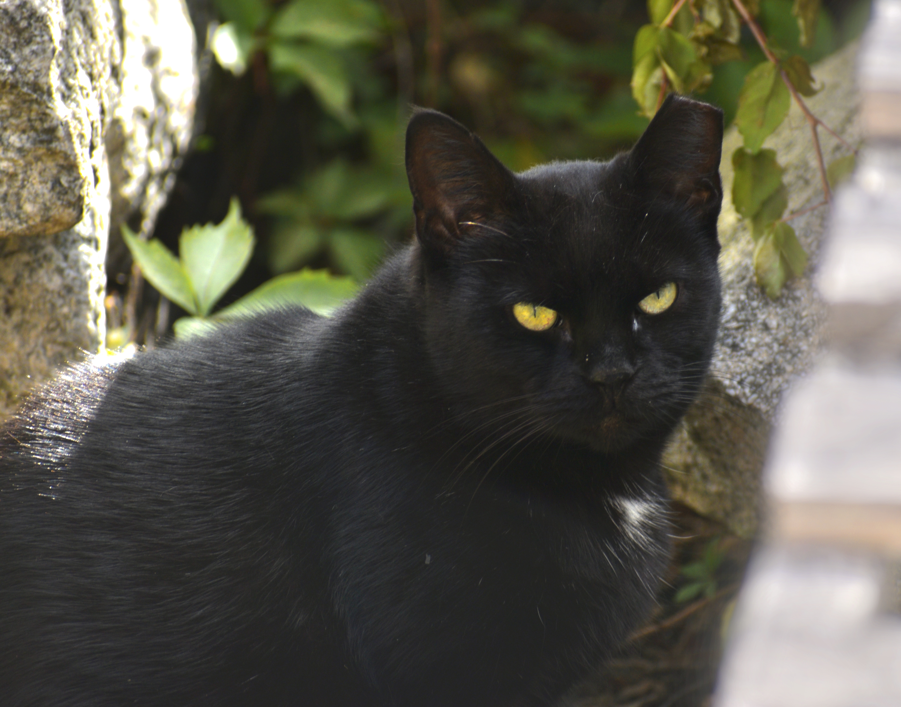

This mini-documentary, Fordham Cats, follows the cats living on Fordham University’s campus and those who take care of them. Fordham’s Rose Hill campus in the Bronx is home to many animals including, raccoons, squirrels, and of course cats! The cats living on campus are feral, meaning they have not been socialized with humans and live outdoors. The Rose Hill campus has become a home for these unowned cats as the rare spot of green space amongst the concrete and glass of New York City, offers a reprieve from the heavy traffic and bustle of an urban environment. Additionally, students and employees of the university set out food, water, and structures to keep cats warm in the winter. The catch-neuter-return program also helps to humanely manage population size. This documentary showcases the work of Fordham's cat caretakers as well as following Fordham’s cats as they navigate their environment. The hard work of volunteers is something that greatly needs to be highlighted. Please enjoy!
Short Documentary Film
Photos
“Morning Pets,” Celeste, a cat rescuer, reaches down to pat a stray on the head.

“Mr.Green Eyes,” a cat patently sits, watching the photographer.
“Sunday Stroll,” a stray takes a casual walk around campus.